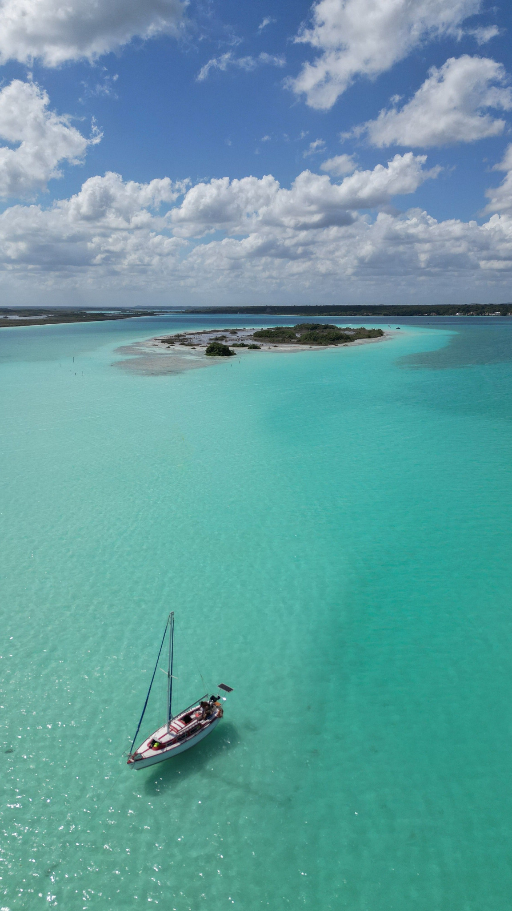
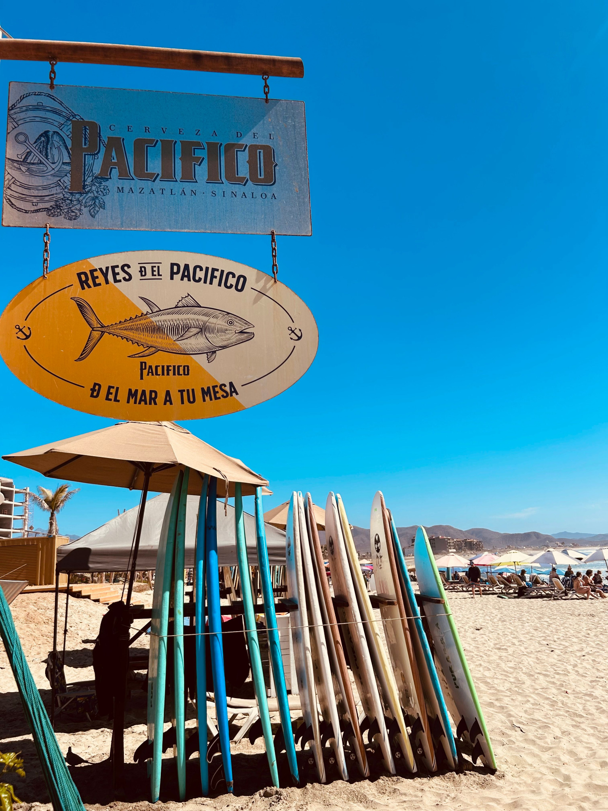
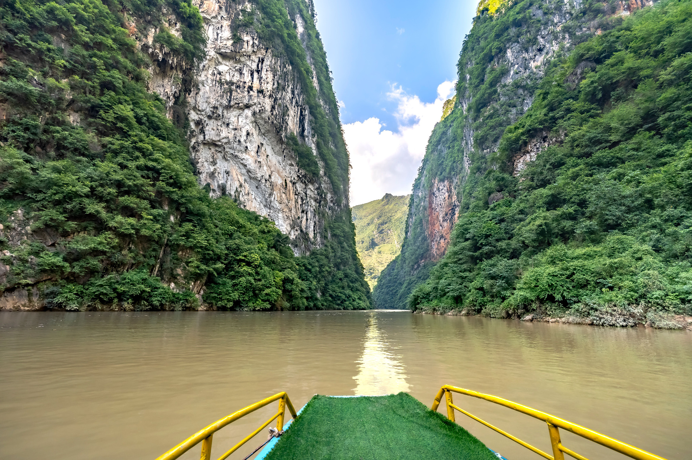
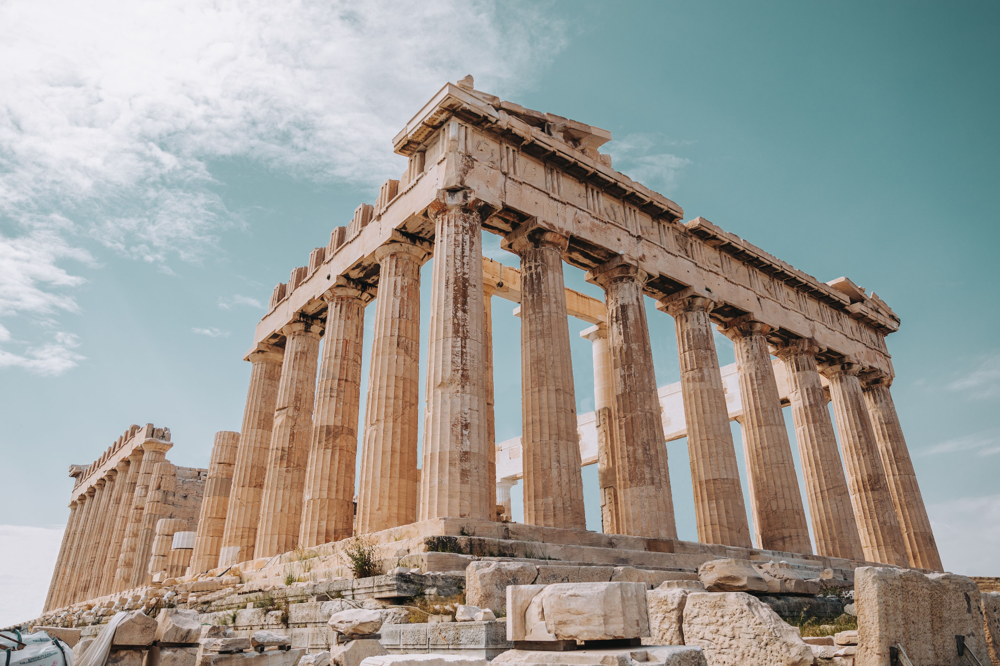
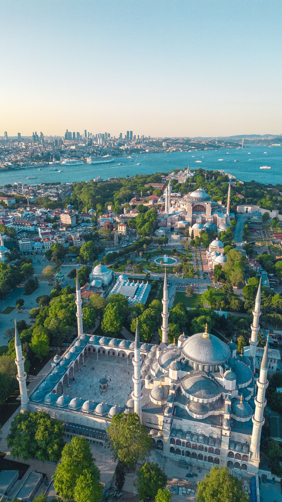

Bacalar
Laguna de los Siete Colores, descanso, actividades sobre el agua y experiencias de conexión.
El mundo merece conocerte. Descubre salidas pensadas para viajeros que quieren explorar México y el mundo.
Bacalar, Cancún, Mazatlán, Barrancas del Cobre y Chiapas son algunas de nuestras salidas favoritas dentro de México.

Laguna de los Siete Colores, descanso, actividades sobre el agua y experiencias de conexión.

Playas icónicas, hotelería, salidas familiares y excelente conexión aérea.

Mar, malecón, excelente ambiente y vacaciones prácticas para disfrutar la costa del Pacífico.
Paisajes impresionantes, ruta ferroviaria emblemática y una experiencia diferente dentro de México.

Cultura, naturaleza y recorridos llenos de color, historia y paisajes inolvidables.
Estas son algunas opciones internacionales para quienes quieren conocer el mundo con una experiencia bien planeada y atención personalizada.

Rutas por ciudades icónicas, historia, cultura y momentos que siempre vale la pena vivir.

Tradición, modernidad, cocina y escenarios sorprendentes en una ruta llena de contrastes.

Islas, mar, pueblos blancos y momentos frente al Mediterráneo para una escapada inolvidable.

Arquitectura impactante, compras, experiencias urbanas y una energía diferente para conocer Medio Oriente.

Historia, cultura y paisajes que hacen de cada recorrido una experiencia muy completa.